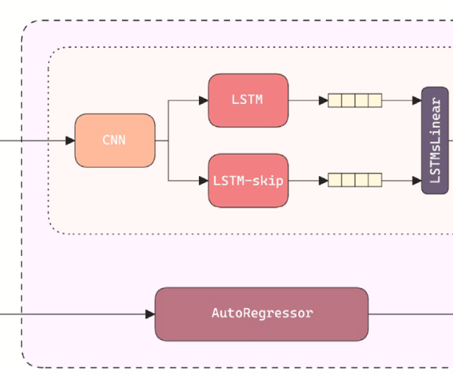
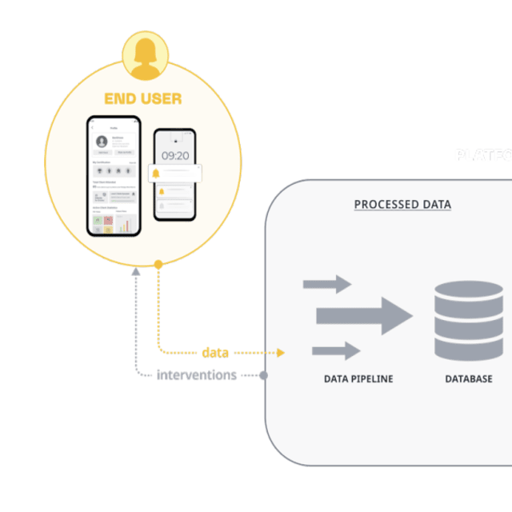
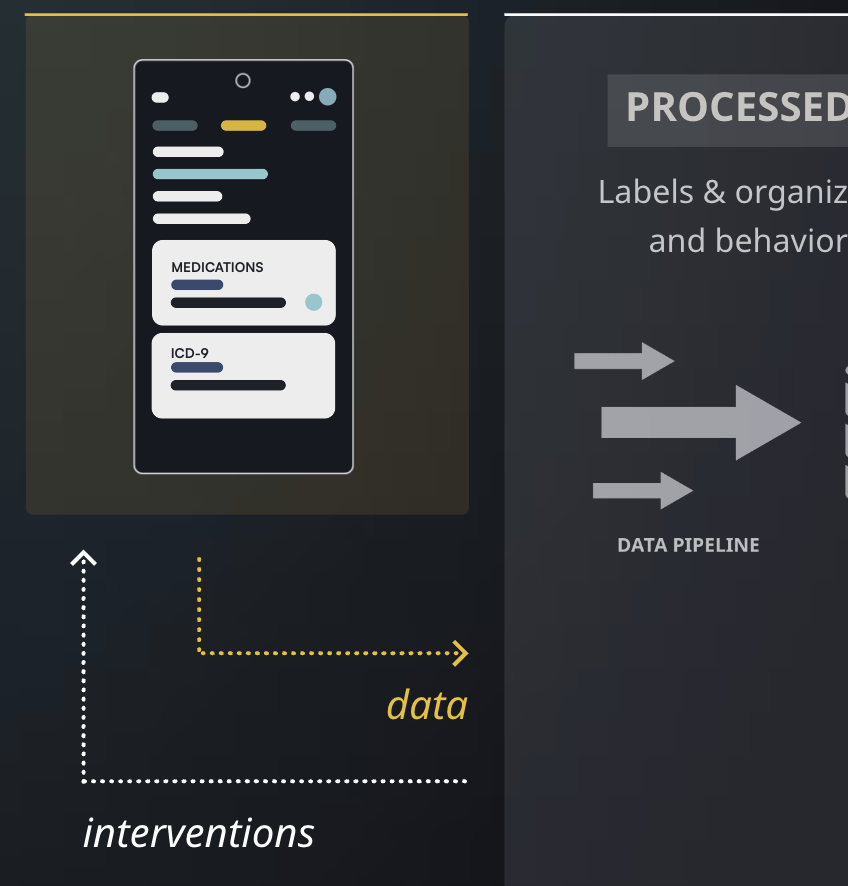
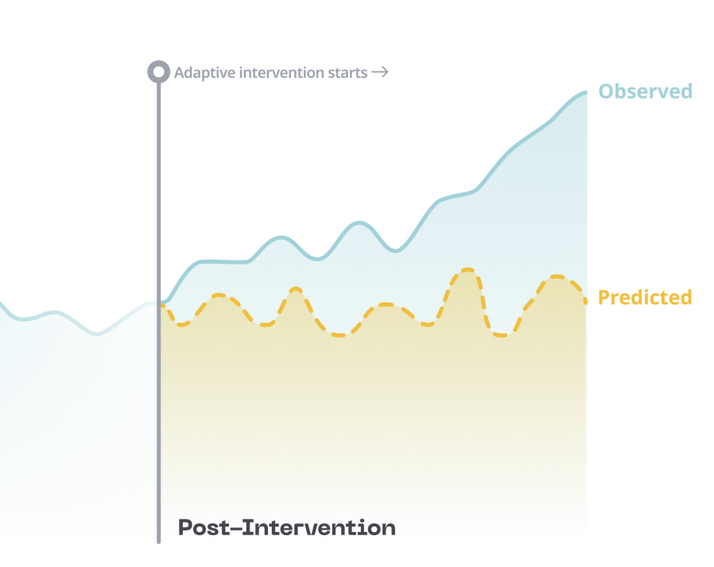
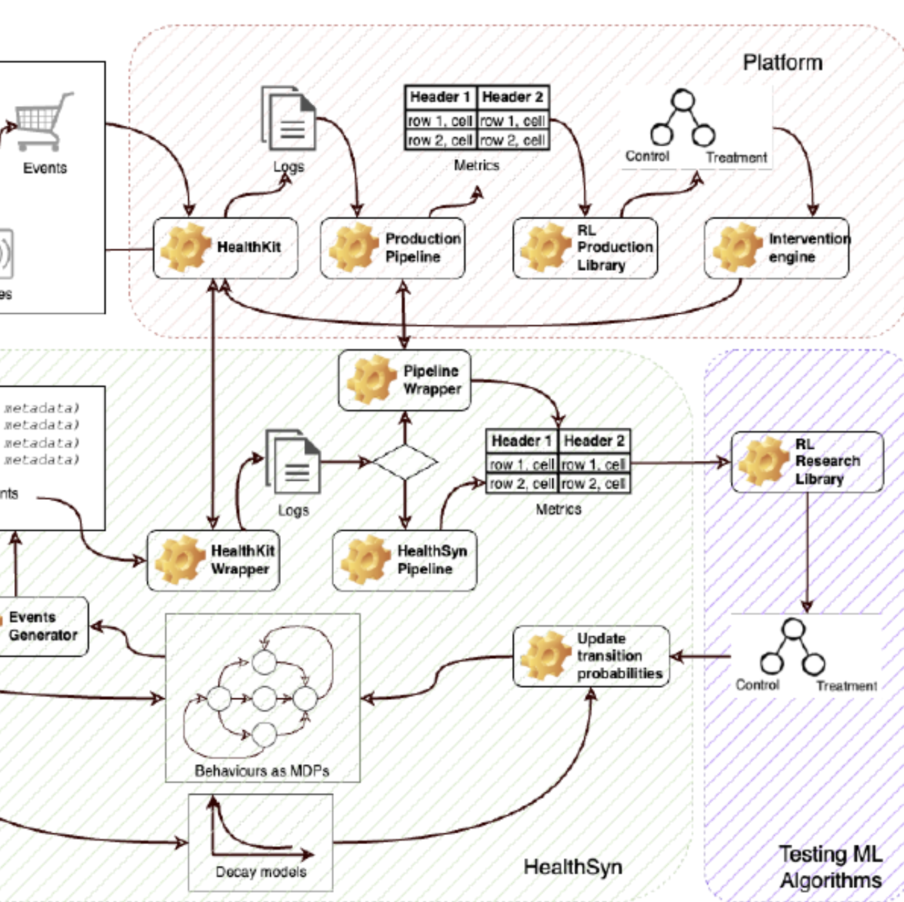
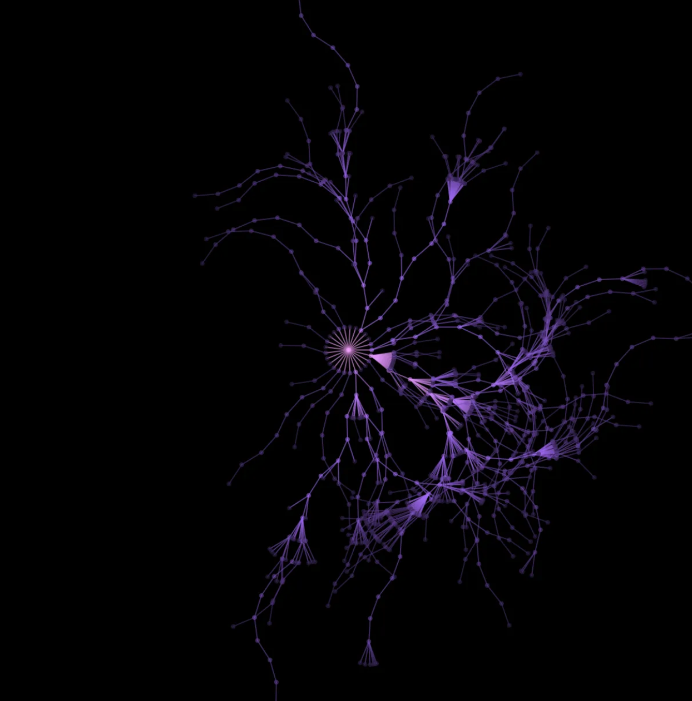
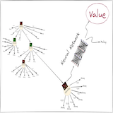
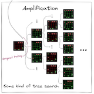

|
Aditya Rastogi
I am a machine learning engineer at Causal Foundry
in Barcelona, Spain.
At CF, I develop and maintain our data pipeline and backend using Go and PostgreSQL. I also
implement deep
learning algorithms particularly contextual bandits and time to event models to run interventions in
healthcare.
I graduated with a dual degree (bachelors and masters) from the Department of Computer Science
and
Engineering at IIT Kharagpur in Jul'21. I am fortunate to
have been advised by Prof. Partha Pratim Chakrabarti
and Prof. Aritra Hazra for my bachelor's and
master's theses, in which I worked on self-supervised learning in computer vision.
I am interested in developing agents that can operate in the real world. I want to develop models
that can do reasoning, in addition to the current tasks that they are good at. I have also worked as
a digital consultant in Tokyo, Japan.
Meanwhile, I've also been focusing on developing backends for large applications.
I have done research internships at the University of British Columbia and the University of
Sydney. I worked on large scale pattern matching and facial
landmarks detection, respectively, in these internships. I have also interned at Goldman Sachs in
Summer 2020. I like to simplify complex concepts (which often requires going back to
first principles) through my blog posts, and visualizations.
Email /
CV /
Transcript /
Twitter /
Github /
LinkedIn
|
|
|

|
Darsi: A deep auto-regressive time series inference architecture for
forecasting of aerodynamic parameters
Aayush Pandey, Jeevesh Mahajan, Srinag P., Aditya Rastogi, Arnab Roy, Partha P. Chakrabarti
Journal of Computational Science
Oct, 2024
An efficient hybrid of CNN and LSTM components to improve prediction of aerodynamic
coefficients for aperiodic and chaotic systems
|
|

|
Adaptive user journeys in pharma E-commerce with reinforcement
learning: Insights from SwipeRx
Ana Fernández del Río, Michael Brennan Leong, Paulo Saraiva, Ivan Nazarov, Aditya Rastogi,
Moiz Hassan, Dexian Tang, África Periáñez
KDD CJ Workshop
Aug, 2024
An RL platform that enhances end-to-end user journeys in healthcare digital tools through
personalization
|
|

|
Adaptive behavioral AI: Reinforcement learning to enhance pharmacy
services
Ana Fernández del Río, Michael Brennan Leong, Paulo Saraiva, Ivan Nazarov, Aditya Rastogi,
Moiz Hassan, Dexian Tang, África Periáñez
KDD AIBS Workshop
Aug, 2024
An RL operational system to deliver personalized behavioral interventions through mobile health
applications
|
|
|
Optimizing HIV patient engagement with reinforcement learning in
resource-limited settings
África Periáñez, Kathrin Schmitz, Lazola Makhupula, Moiz Hassan, Moeti Moleko, Ana Fernández
del Río, Ivan Nazarov, Aditya Rastogi, Dexian Tang
KDD Epidamik Workshop
Aug, 2024
Describes the development of an AI-native mobile app for CHWs and outlines the upcoming
RL-based adaptive intervention plans, all aimed at enhancing health worker engagement,
efficiency, and patient outcomes
|
|

|
The Digital Transformation in Health: How AI can Improve the
Performance of Health Systems
África Periáñez, Ana Fernandez Del Río, Ivan Nazarov, Enric Jané, Moiz Hassan,
Aditya Rastogi, Dexian Tang
Harvard TH Chan School of Public Health | Takemi Program in
International Health
Oct, 2023
A framework detailing how integration of AI into digital health applications focused on supply
chain operation, patient management, and capacity building, etc. can improve health system and
public health performance
|
|

|
Synthetic Data Generator for Adaptive Interventions in Global Health
Aditya Rastogi, Juan Francisco Garamendi, Ana Fernández del Río, Anna Guitart, Moiz Hassan
Khan, Dexian Tang, África Periáñez
ICLR MLGH Workshop
Mar, 2023
An open-source synthetic data generator of user behavior for testing reinforcement learning
algorithms in the context of mobile health interventions using open-source SDK for tracking,
organizing, and labeling data ready for machine learning models.
|
|
|
Implementing Switch Transformers from scratch in PyTorch — Part 1
Aayush Pandey, Aditya Rastogi
Feb, 2023
Reflecting upon the potential of transformers and scaling them with an efficient version:
Switch Transformers.
|
|

|
AlphaZero from scratch in PyTorch for the game of Chain Reaction — Part 3
Aditya Rastogi, Aayush Pandey
Nov, 2022
Neural Network Architecture, Self-learning, Board Symmetries, Playout Cap Randomization and
other pieces to make it all work.
|
|

|
AlphaZero from scratch in PyTorch for the game of Chain Reaction — Part 2
Aditya Rastogi, Aayush Pandey
Oct, 2022
Understanding Monte Carlo Tree Search - the search algorithm that sits at the core of
AlphaZero.
|
|

|
AlphaZero from scratch in PyTorch for the game of Chain Reaction — Part 1
Aditya Rastogi, Aayush Pandey
Sept, 2022
Coding the Chain Reaction game, and understanding amplification and distillation of knowledge
in AlphaZero.
|
|
|
Vision, Explained
(Draft) Jan, 2022
In this post, I try to explain the biological vision system,
primarily in humans. I start with the techniques used to understand how
vision works, and then look at how the vision system is wired in our
brains.
|
|
|
Using Selenium and Twilio’s Voice API to call myself for getting my vaccine slot
booked in India
May, 2021
Here’s how I used Selenium and Twilio’s Voice API in Python to make a phone call when vaccine
slots got available near my location in India.
|
|
|
Reducing computational constraints in SimCLR using Momentum Contrast V2 (MoCo-V2) in
PyTorch
Aug, 2020
The SimCLR framework requires large batch-sizes to form a good representation space, because
the negative pairs are generated in the same batch. Momentum Contrast V2 combines SimCLR's
design improvements with the original MoCo framework to do self-supervised learning with less
computational costs.
|
|
|
Understanding SimCLR — A Simple Framework for Contrastive Learning of Visual
Representations with Code
Apr, 2020
SimCLR is a simple framework for contrastive learning of visual representations. It showed that
composition of data augmentations like color jittering and random crop play a critical role in
learning good visual representations.
|
|
|
The GNU Toolchain Explained
Mar, 2020
The GNU Toolchain is a set of programming tools in Linux systems that programmers can use to
make and compile their code to produce a program or a library. This post explains this toolchain
that contains GNU m4, GNU Make, GNU Bison, GCC, GNU Binutils, GNU Debugger and the GNU build
system.
|
|
|
Visualizing Neural Networks using Saliency Maps in PyTorch
Jan, 2020
This post discusses a simple gradient approach (
by Simonyan et. al) to obtain saliency maps for a trained neural network in PyTorch.
|
|
|
Solving Racetrack in Reinforcement Learning using Monte Carlo Control
Jan, 2020
This post solves the racetrack problem in reinforcement learning in a detailed step-by-step
manner. It starts with constructing the racetrack environment in Pygame and then proceeds with
solving this problem with the off-policy Monte Carlo control algorithm.
|
|
|
Elucidating Policy Iteration in Reinforcement Learning — Jack’s Car Rental Problem
Oct, 2019
This post explains the policy iteration algorithm in Reinforcement Learning and uses it to
solve Jack’s car rental problem given in the Sutton & Barto book.
|
|
|
Genetic algorithm to navigate in a 2D environment
This is a simulation in which the goal of the rockets is to reach the yellow circle while
avoiding the obstacles and the borders along their path. This page shows how a genetic algorithm
solves this path planning problem.
|
|
|
The Expectation-Maximization Algorithm
This page is an implementation of the Expectation-Maximization (EM) algorithm from scratch. It
fits mixture gaussian density to the points provided on the screen.
|
|
|
Flappy Fish
Just like flappy bird, the goal is to swim between columns of pipes without hitting them. The
spacebar can be used to control the fish.
|
|
|
Falling Blocks
You need to save your block from the other falling blocks in this game. Increase your score
and climb up the levels. The falling blocks follow Poisson distribution to ensure that the
occurrence of one falling event does not affect the probability that a second falling event will
occur. The expectation of this distribution increases as the game progresses.
|
|
|
15 puzzle
This is the classic 15 puzzle problem. I became quite interested in solving it in as less
number of steps as I could. The goal is to place the tiles in order, by making moves that use
the empty space. I find it quite interesting how we humans can find good heuristic functions
based on both logic and intuition to navigate in the state space to arrive at the goal state and
that too with constrained memory.
|
|
|
Convex Hull
An implementation of the Gift Wrapping algorithm for convex hull.
|
|
|
Perlin Noise flow-field visualization
Perlin noise is a type of gradient noise used by visual effects artists to increase the
appearance of realism in computer graphics. This page uses a 2D perlin noise distribution to
create a force field in which a thousand particles are dropped on the screen and their locus is
displayed to create beautiful designs.
|
|